Entender o cliente
Momento de vida, objetivo, patrimônio, rotina, apetite de investimento e preferências reais.
Curadoria imobiliária de alto padrão em Florianópolis para quem precisa decidir com critério, leitura de mercado e confiança antes de receber qualquer oferta.
O desafio real é decidir bem quando cada escolha envolve cidade, patrimônio, liquidez, timing, construtora, rotina e futuro.
A marca lê contexto, filtra oportunidades e conduz decisões com critério. O imóvel aparece como consequência de uma tese, não como ponto de partida.
Florianópolis entra como leitura de território, timing, acesso e permanência.
Uma condução clara para transformar intenção, contexto e oportunidade em decisão imobiliária mais segura.
Momento de vida, objetivo, patrimônio, rotina, apetite de investimento e preferências reais.
Tempo de decisão, liquidez desejada, ciclo familiar, plano financeiro e horizonte de uso.
Bairro, mobilidade, valorização, construtoras, entorno, infraestrutura e movimento da cidade.
Menos opções soltas e mais recomendações organizadas por critério, aderência e timing.
Comparar caminhos, riscos, oportunidades e impactos com linguagem consultiva e objetiva.
Da conversa inicial ao fechamento, com clareza, responsabilidade e continuidade.
A B. Living sustenta a decisão com uma hierarquia clara: autoridade, método, relacionamento, território e produto.
Visão, repertório e leitura de mercado.
Atendimento consultivo e preparo contÃnuo.
Relacionamento com quem movimenta o alto padrão.
Cidade analisada como decisão estratégica.
Produto apresentado depois da leitura.
Para quem busca uma escolha coerente com rotina, famÃlia, conforto e permanência.
Para quem precisa avaliar valorização, liquidez, produto, construtora e timing.
Para decisões que envolvem troca, expansão, diversificação ou nova fase de vida.
Para enxergar a cidade com mais contexto antes de comparar unidades isoladas.

08Uma decisão imobiliária de alto padrão deve continuar fazendo sentido depois da assinatura.
Ao falar com a B. Living, a primeira etapa não é receber uma lista de imóveis. É abrir uma leitura sobre momento, objetivo, perfil, território desejado e critérios de decisão.
Iniciar conversa de curadoriaFale com a B. Living para iniciar uma conversa consultiva sobre seu próximo movimento imobiliário em Florianópolis.
Conheça a B. Living Atendimento consultivo, sem urgência artificial e sem catálogo genérico.